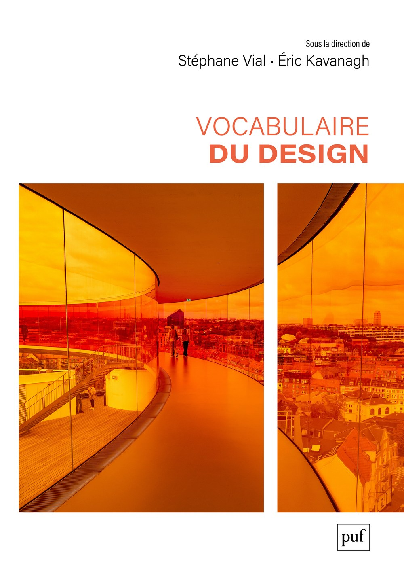

Avant-première
Le plus grand dictionnaire savant du design
Stéphane Vial
Professeur titulaire à l'École de design
de l'Université du Québec à Montréal

Trois temps
Temps 1
Vocabulaire du design
sous la direction de S. Vial et É. Kavanagh
330 entrées, 100 auteurs·rices, 600 pages
Presses universitaires de France
Le design possède sa propre langue
Une place dans une tradition
Les Presses universitaires de France publient depuis un siècle les dictionnaires savants de toutes les disciplines :
Le design n'en avait aucun.
Pourquoi maintenant
Figer ou libérer la discipline ?
... redouter que la définition du verbe aimer dans les dictionnaires n'empêche les multiples formes d'amour d'exister.
S.V. et É.K., Préambule, p. 11.
Temps 2
Design thinking
L'idée reçue
Une méthode d'innovation à base de post-its, inventée par des consultants et sans rapport avec le design.
Ce que dit l'entrée
Deux notions distinctes portent le même nom. Un style cognitif propre aux designers, décrit dès les années 1960. Et une approche de gestion, diffusée à partir des années 2000.
Créativité
L'idée reçue
Un don. Une qualité que certains possèdent et d'autres non.
Ce que dit l'entrée
Ni un trait individuel stable, ni la seule originalité. Un phénomène contextuel, distribué et pluriel, qui dépend de collectifs, d'outils, d'environnements, et qui mêle recours aux connaissances et ouverture à l'incertitude.
Interaction
L'idée reçue
Une affaire d'écrans, de boutons et de clics.
Ce que dit l'entrée
Une boucle d'actions réciproques entre une personne et un système. Les réseaux de neurones y ramènent aujourd'hui la conversation, et le prompt.
Temps 3
Wicked problems · Rittel et Webber, 1973
Le design a changé de problèmes. Les plus urgents n'ont pas de solution, seulement des arbitrages.
Des mots qui n'existaient pas il y a vingt ans
Ce que le design absorbe
Ce qu'il apprend à contester
Un mot qu'on n'a pas est une décision qu'on ne peut pas discuter.
Insaisissable et en évolution constante, mais peut-être en avons-nous capturé un certain état.
Le préambule du Vocabulaire du design, Montréal et Québec, 31 mars 2026
Crédits et sources
| Se déplacer | |
|---|---|
| → ↓ Espace | Diapositive suivante |
| ← ↑ | Diapositive précédente |
| Début / Fin | Première / dernière diapositive |
| R | Revenir à la première diapositive |
| G | Aller à une diapositive par son numéro |
| Afficher | |
| F | Plein écran |
| Échap | Fermer la recherche ou l'aide · vue d'ensemble |
| P B . | Écran noir |
| S | Rechercher un mot dans les diapositives |
| ? | Cette aide |